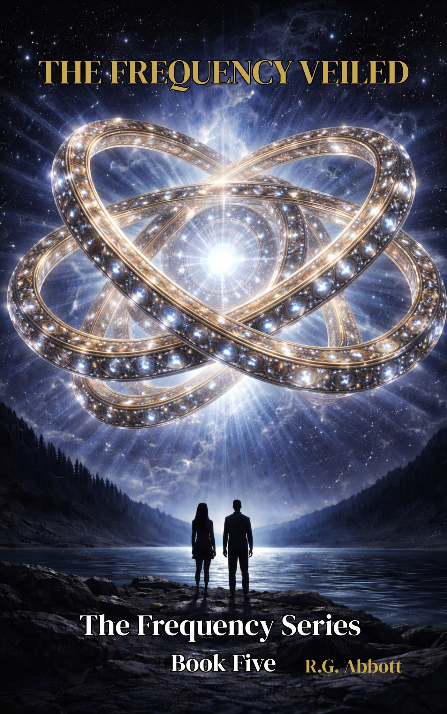
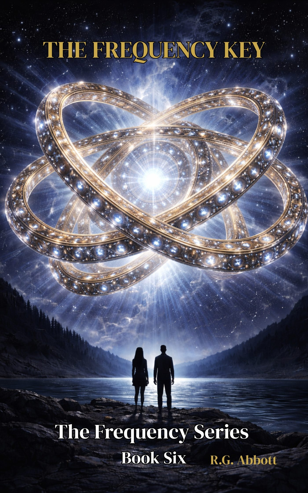
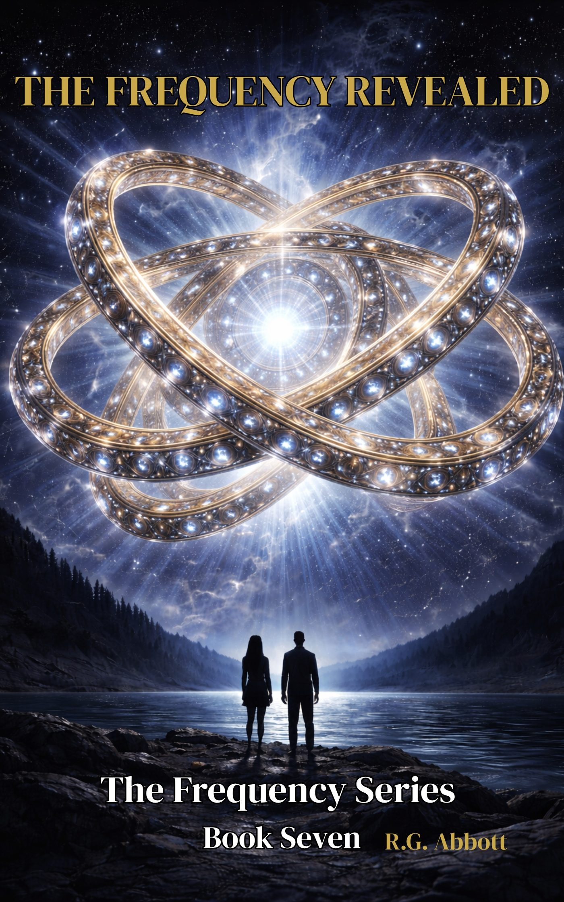
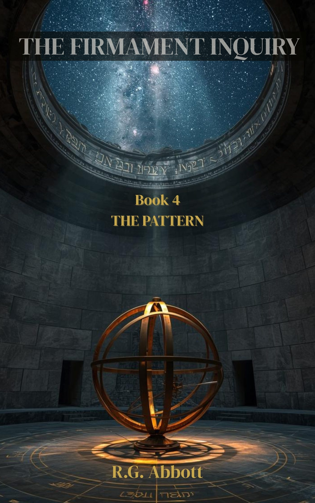

Fictional Series by R.G. Abbott
Prophetic thriller fiction for readers who want their stories to make them think. Two complete series exploring the signals hidden in history, Scripture, and the world unfolding around us.
Series One
The Frequency Series
A retired signals intelligence analyst begins receiving transmissions that shouldn’t exist. Seven books. One continuous frequency. A table of ordinary people choosing to keep listening when the world chooses noise.
Book 1
Glitch
The signal was never supposed to reach him. A retired analyst notices a pattern in the noise — and can’t stop listening.
Read More Kindle on Amazon Paperback on AmazonBook 2
Signal
Others are receiving it too. The network forming around the frequency is drawing attention from those who would prefer it stay silent.
Read More Kindle on Amazon Paperback on AmazonBook 3
Source
Where is the frequency coming from? The table turns its attention to the question beneath all the others.
Read More Kindle on Amazon Paperback on AmazonBook 4
Gate
The door is opening. Not everyone will walk through. The table must decide what they are willing to do with what they now know.
Read More Kindle on Amazon Paperback on Amazon
Book 5
The Frequency Veiled
What has been hidden is beginning to show. The veil is thinning — and those maintaining it are not passive.
Read More Kindle on Amazon Paperback on Amazon
Book 6
The Frequency Key
The code is breaking open. The Antichrist figure is emerging. The table has the key — the question is whether anyone will listen in time.
Read More Kindle on Amazon Paperback on Amazon
Book 7 — Series Complete
The Frequency Revealed
The veil is gone. The witnesses speak. The new register begins. The conclusion of the complete Frequency Series.
Read More Kindle on Amazon Paperback on AmazonSeries Two
The Firmament Inquiry
A theology professor and an Israeli data scientist investigate the hidden architecture of the ancient world — following evidence that suggests the map of reality itself has been redrawn. Seven books. Two investigators. Questions that cannot be unasked.
✓ Complete Series — All 7 Books AvailableBook 1
The Assumption
A theologian at a small Ontario university receives an email from a data scientist in Tel Aviv. She has spent four years building a database of measurement anomalies she cannot explain. He replies. The inquiry begins.
Read More Kindle on Amazon Paperback on AmazonBook 2
The Language
Fourteen months later, Dr. Mira Koren has built a second database — drawn not from navigational records but from ancient texts. What it documents is a pattern in the original Hebrew cosmological vocabulary. A pattern in how specific words were translated across centuries.
Read More Kindle on Amazon Paperback on AmazonBook 3
The Record
In the same century the Septuagint was reducing the physical vocabulary of the ancient cosmological texts, the Dead Sea Scrolls community at Qumran was building a liturgical tradition on top of it. One community reducing. The other building. The inquiry follows what that discovery required them to examine next.
Read More Kindle on Amazon Paperback on Amazon
Book 4
The Pattern
Three patterns. Each one discoverable in the existing record. The Pattern asks what three independent lines of evidence converging on the same question add up to. The answer is not a conclusion. It is the question in its proper form.
Read More Kindle on Amazon Paperback on AmazonBook 5
The Boundary
The ancient texts described two sides of the raqia. Below: the world. Above: something else. Most scholars treat it as mythological furniture, not meant to be pressed for meaning. Dr. Amos Holt has learned to be suspicious of phrases like not meant to be pressed.
Read More Kindle on Amazon Paperback on AmazonBook 6
The Silence
Three independent instruments on a balloon above the Icelandic plateau found something at 90 to 100 kilometers that the standard atmospheric models do not account for. The boundary has been measured. The partial answer has opened a harder question: what was the nature of the ancient writers’ access to it?
Read More Kindle on Amazon Paperback on AmazonBook 7 — Series Complete
The Revelation
Six objects. 710 meters per second. Evenly spaced positions around the earth. Confirmed at a cross-correlation of 0.94. The ancient writers called them watchers. The inquiry has found them. The question this final volume holds — and cannot answer — is what they are watching for.
Read More Kindle on Amazon Paperback on AmazonAbout R.G. Abbott
R.G. Abbott is the fiction pen name of Rich Abbott — author, former pastor, and theologian based in rural Manitoba. His prophetic thriller series are written for readers who sense that the world is moving toward something, and want fiction that takes that seriously.
Looking for nonfiction titles and wealth psychology resources?
Visit RichAbbott.com